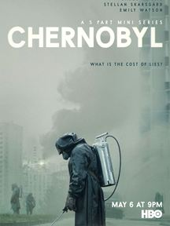
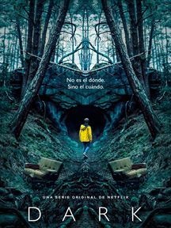
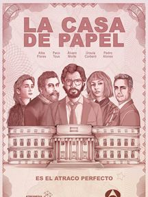

|  |
chernobylGénero:Drama Director:Craig Mazint Año: 2016 una de las peores catástrofes humanas se cierne sobre la faz de la tierra. La planta nuclear de Chernobyl explota causando uno de los mayores desastres medioambientales de la historia, debido al sobrecalentamiento del núcleo del reactor nuclear.. |
 |
DarkGenero: Drama, Ciencia ficción, Suspense Director:Baran bo Odar, Jantje Friese Año: 2017 Descripcion: Dark es una serie original de Netflix del género de thriller de misterio con toques de fantasía sobrenatural. Esta serie es el primer proyecto que la compañía de streaming desarrolla que está escrita, rodada y producida en Alemania. |
|---|
|  |
La casa de papelGénero: Drama, Suspense Director: Álex Pina Año: 2017 una de las La mente que idea este plan es El Profesor, un hombre que recluta a siete personas para llevar a cabo el gran golpe. Tokio es una joven atracadora muy buscada por la policía, Berlín asume el papel de "el cabecilla", Moscú es el experto en perforaciones, Río es "el informático", Nairobi es la falsificadora, Denver es el hijo de Moscú y, como siempre, falta la fuerza bruta: Helsinki y Oslo. |
 |
Hijos de la anarquíaGenero: Drama, Crimen, Suspense Director: Kurt Sutter Año:2008 - 2014 Descripcion: Aclamado drama muy a la americana creado por Kurt Sutter ('The Shield'), que se colocó rápidamente en lo más alto de la cadena FX en lo que a series de ficción se refiere. Narra las aventuras de los Hijos de la Anarquía, una banda de moteros con su propio código de moral a los que no les importa cometer actos criminales y atroces con tal de su subsistencia. |
|---|